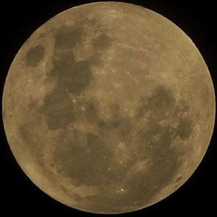

Ever wondered what lies hidden in those blurry space images we see? Our project brings those unseen cosmic details to life! Using the power of artificial intelligence, it enhances low-quality space photographs into stunning, high-resolution visuals; revealing faint stars, distant galaxies, and the beauty of the universe like never before.
This technology helps both astronomers and space enthusiasts explore the cosmos more clearly.
In simple words
we’re teaching AI to see the universe better, so we can too!
For more information
